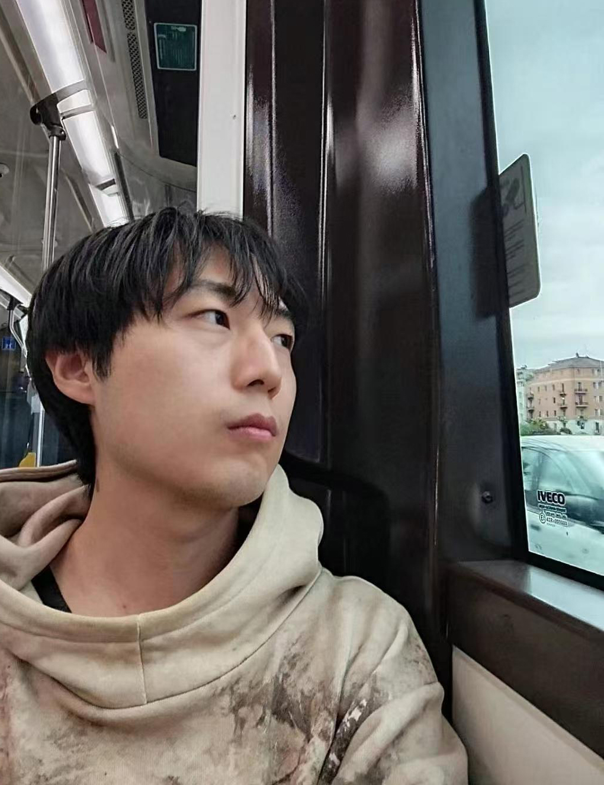
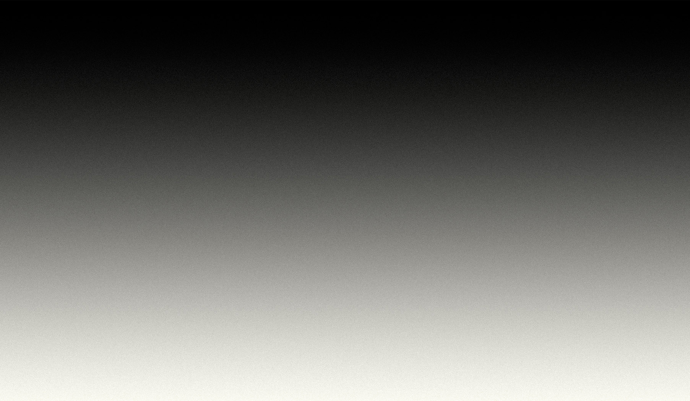

嗨！我是 邸涵（DiHan） 。
独立创作者，崇尚 “现代文艺复兴人” 的生存方式， 通过自学与实践，将复杂问题转化为可执行的方案。
创作来自真实经验， 不追求姿态，只关注 真实、具体的东西。
当方向模糊时， 我把走过的过程整理在这里，留给自己，也留给时间。
我并不是一个从一开始就目标清晰的人。
相反，我更像是在不断试错中，逐渐确认自己适合什么、不适合什么。 许多选择并非出于笃定，而是在一次次现实反馈中，被迫修正方向、调整位置。
我最早就是美术生，接受的是绘画训练。那时并没有明确的职业设想，也谈不上所谓的“规划”， 只是对“如何观看”“如何构成画面”产生了兴趣。 在很长一段时间里，安静地画画、观察事物的结构、比例与关系， 是我理解世界、建立秩序的一种方式。
后来进入大学，学习室内设计与展览相关方向。 这一阶段，我第一次系统性地意识到： 创作并不只是审美或情绪的输出，而是一种需要被组织、被理解、被执行的能力。 空间、尺度、结构、逻辑，以及它们如何回应功能与现实需求， 逐渐成为我思考的核心。 也正是在这一时期，我开始系统地学习并使用 3D 建模，将抽象设想转化为可视、可验证的方案。
本科毕业后，我选择前往意大利继续学习，在研究生阶段主修视觉艺术与策展研究。 相比单一媒介的创作，这一阶段更强调语境、叙事、观看方式与公共呈现。 从平面到空间，从艺术到实用，从理念到落实，我完成了大量课程作业与个人习作， 在不同尺度与语境中，接受了较为全面的视觉艺术训练。
也正是在这一过程中，我第一次真正意识到： 创作并不只存在于狭义的“艺术语境”， 它同样存在于现实生活、工作系统以及人与人之间的沟通之中。 作品不只是被完成的对象， 更是一种被放置、被理解、被使用，并最终进入现实的结果。
在意大利的生活并不轻松。 我一边学习，一边工作。 从研二开学开始，除去课程时间，我几乎全职在一家设计工作室实习， 参与项目推进、建模与方案执行。
这是一家规模不大的公司，但并不是一份简单的工作。 真实项目有其复杂度与进度要求。 我与客户沟通，与同事协作，学习如何通过空间回应需求、呈现效果； 我参与材料采购，前往施工现场，跟进项目从设计到落地的完整流程。 我亲眼看着一个设计从需求到模型，从图纸到物料，从开工到开业， 在现实中一点点成形。 那一年多的时间里，我确实学到了很多，也被现实充分锻炼。
但这段经历并非只有成长。 作为一个崇尚能力、信奉多劳多得的人，我曾以为只要持续付出，就一定会得到相应的回报。 现实给我上了一堂并不轻松的课。 在多次提出希望获得一份正式合同却始终被敷衍回应之后，我选择离开。
短暂回国后，我再次回到意大利。这一次，我没有继续寻找艺术或设计相关工作， 而是直接进入餐厅，从帮厨和服务员做起。 这是一份辛苦却简单、合同清晰、报酬稳定的工作。 我一方面承受着来自社会与家庭的压力，面对体力劳动与高度重复的日常； 另一方面，也在这里结识了来自不同国家、背景各异的人。
那段时间里，我刻意减少过度思考，把注意力放在眼前的事务上。 我乐于与朋友、邻居、同事和客人交流， 观察世界的丰富与参差，也珍惜那些微小却真实的幸福。 这并不是一份我计划长期从事的工作， 但它是一段让我感到踏实、满足，也不会后悔的时光。
回头看，这些看似分裂的经历，却在某种程度上构成了一条连续的现实路径。 它们让我重新理解“工作”这件事—— 它不仅关乎能力本身，更关乎所处的位置、所面对的环境，以及最终做出的选择。 这些经历并没有让我远离创作，反而让我对“真实”产生了更强的执念。
我开始用视频记录生活，用网站整理自己走过的路径与判断。 不再追求姿态，也不急于为自己定义身份， 而是专注于一件事： 把经历沉淀下来，让它们变得清晰、可复用、可被他人理解。
2025 年 7 月回国之后，我开始协助家里参与光伏工程项目的相关工作。 从设计与视觉系统，进一步进入工程、项目与商业语境， 这对我来说是一次重要的转向。 工程并不提供浪漫叙事，但它迫使人直面现实： 成本、效率、风险、协作，以及长期的可持续性。
这也是我从“执行者”逐步走向“参与经营与判断”的开始。 我仍然在学习阶段，但直觉告诉我， 这很可能是一件我会长期投入、并认真对待的事情。
现在的我，既是创作者，也是学习者。 我做设计、建模与影像记录，也在不断学习商业与现实运作的方式。 我相信真正有价值的创作，并不是来自“天赋叙事”， 而是来自长期的投入、反复的修正，以及对现实保持诚实的态度。
这个网站，并不是结论。 它更像是一份持续更新的记录—— 记录我如何在现实中行走、学习与创造， 也记录我如何一步步成为现在的自己。
时间轴
